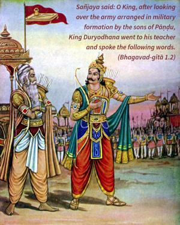
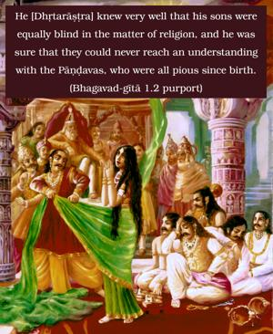
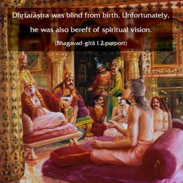

Sañjaya said: O King, after looking over the army arranged in military formation by the sons of Pāṇḍu, King Duryodhana went to his teacher and spoke the following words.



Dhṛtarāṣṭra was blind from birth. Unfortunately, he was also bereft of spiritual vision. He knew very well that his sons were equally blind in the matter of religion, and he was sure that they could never reach an understanding with the Pāṇḍavas, who were all pious since birth. Still he was doubtful about the influence of the place of pilgrimage, and Sañjaya could understand his motive in asking about the situation on the battlefield. Sañjaya wanted, therefore, to encourage the despondent king and thus assured him that his sons were not going to make any sort of compromise under the influence of the holy place. Sañjaya therefore informed the king that his son, Duryodhana, after seeing the military force of the Pāṇḍavas, at once went to the commander in chief, Droṇācārya, to inform him of the real position. Although Duryodhana is mentioned as the king, he still had to go to the commander on account of the seriousness of the situation. He was therefore quite fit to be a politician. But Duryodhana’s diplomatic veneer could not disguise the fear he felt when he saw the military arrangement of the Pāṇḍavas.